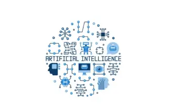
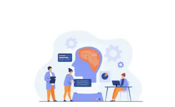

Happy Customers
We have clients from all over the world, including US, UK, Australia, Middle East, Canada and India
Cloud Converge is a leading firm in developing intelligent computer software. We design reliable and strong solutions that leverage Artificial Intelligence for small and large-scale businesses globally. We can help you expand your business, earn more, and earn a fairer return on your investment.
Our team of professionals, who create and construct these intelligent programs, can develop solutions for any kind of company. We make companies more agile, budget costs more efficiently, and continue providing helpful outcomes. In short, we’re here to enable your company to become smarter, earn more money, and do things in a better way.
Companies today are employing machine learning to examine information and automate their processes. Machine learning is a subset of artificial intelligence that employs specific rules to perform tasks without human beings necessarily being involved directly.
Our experts are fully aware of the current trends and technologies used in machine learning, such as data science, computer vision, natural language processing, and deep learning. We apply these trends to assist your business in leveraging machine learning and artificial intelligence to their full potential. We can implement your ideas in reality with our top-notch machine learning solutions and services.
Our services are perfect for processing high volumes of data. They assist in a lot of tasks that require a great deal of effort and time, tasks that ordinary methods cannot perform as well.
We have the best machine learning solutions at Cloud Converge. Business executives can employ our highly specialized AI solutions to enhance their firms and address real issues.
Our AI specialists develop and employ techniques to perform tasks such as enhancing, learning about customers, anticipating future trends, and monitoring how well things are progressing.
Our developers deliver ingenious AI software programs to identify various things and product categories within images. We deploy intelligent technology such as deep learning visual search and Amazon Recognition.
We develop chatbot software that behaves humanly. Our professional team designs chatbots with customized communication to enhance reliability and assist customers.
Our AI Developers implement AI to create solutions that can collect sloppy data and convert it into valuable information for business development.
With NLP and NLU, our AI designers enable businesses to understand and analyze customer opinion to increase engagement and enhance business results.
Our AI specialists also create voice assistants using NLP and voice recognition. This improves brand exposure and increases business efficiency through voice search.
We effectively collaborate with product teams, engineers, and researchers to develop superior AI/ML-enabled products. We use six steps to develop AI/ML in the correct direction.
Here, we comprehend the problem of the machine learning project, solve it, and produce a solution that suits you. We align goals with probable outcomes using AI/ML tools.
We dig into the data to uncover patterns and interpret them against your problem. We concentrate on various facets of data that are available, i.e., inserting new information or modifying existing data, and verify the interesting relations among variables.

We convert raw data into an appropriate form for analysis and model building. This plays an important role in measuring the success of the end model. There are several ways that your data can be processed.
This is all about building the model. There are numerous algorithms and techniques, and we tend to begin with a simple iteration.
After building the model, we test it and know how to understand the results before pushing it to production. Cross-validation is a critical way to evaluate the model.
After we know how the model is performing, we push it into production. This critical phase lets you utilize your data for actual applications, and you can use manual or automatic deployment.

We have clients from all over the world, including US, UK, Australia, Middle East, Canada and India
We have developed numerous complete web & mobile app for our clients across the globe.
We as an organization believe that client satisfaction begins from requirements definition phase to design, feedback cycle and golive.
We operate on all the top technology stacks such as .NET Core, MERN, MEAN, React Native, Swift, Java and many more.
Having experience as a machine learning development company, our data science professionals help businesses tackle complex projects on intelligent tools from data-driven business decision-making. Our AI products are founded on methodologies like computational intelligence, pattern recognition, and predictive analytics to create future-proof machine learning applications. We strive to automate and enhance your business operations with intelligence.
With the use of Predictive Analytics, we assist businesses in forecasting things to come using data, AI, and statistical algorithms. With our scalable machine learning solutions, we can ascertain the result of things to come based on data.
We use predictive modeling to optimize the operations of businesses, reduce risks, and track performance. It improves ROI and provides valuable business insights. We tune the model for maximum accuracy to achieve the best results.
Combining Machine Learning tools with marketing and CRM tools, we help firms with market segmentation, targeted marketing, demand forecasts, lead analysis, and content recommendations for markets and potential clients.
Take advantage of our Deep Learning talent and let us create customized frameworks for your organization. We explore deep into complex data to uncover significant opportunities and create flexible solutions to increase your company’s revenue.
Our AI professionals create custom machine learning software to build models of business processes automatization and decision-making. We transform raw data from big sources of data and legacy software systems into formatted datasets, doing classification, grouping, and providing models on different systems.
We use machine learning for CRM and marketing automation solutions to enable precise marketing, detailed segmentation of the market to a high degree of specificity, amplified price strategies, precise demand forecasting, building affinity models, lead scoring, and content recommendation optimization for potential clients and markets. Combining Machine Learning tools with marketing and CRM tools, we help firms with market segmentation, targeted marketing, demand forecasts, lead analysis, and content recommendations for markets and potential clients.


"Good experience overall. My 3rd project with them overall. Will highly recommend using them."

Tom WymanWeb Designer
"Its been a pleasure to work with CloudConverge.io team. They have a great team, including their Customer Success Manager who was great help to us. We have been doing great during our peak sale season, without any hickup. Great job guys."

Richard HellerCEO
"We are really happy with how quickly we were able to launch the project, they had a really seamless process of getting our existing database and agents onboard, manage their leads & properties. We will definitely recommend using them for any web solution project. They have a great team in place with a talent to understand business intricacies."

Samuel CorrensLong Island RE
"We were looking to modern a lot of aspects within our organization including migration to Business Central as ERP, implementing Microsoft 365, Cloud Services and Web Development. We at Kabu Projects and Atmos are happy to refer Cloud Converge team and all IT services. They are well-versed with the best practices, have a good project management and software team."
Kabu Projects
"We are a non-profit were organizing a large event which includes delegates and attendees from all over the globe. The way Cloud Converge team handled our web presence, online payment system was truly exceptional. The entire process including site design, implementation of CRM, integration with partners, live dashboards were all delivered in record time. Most of all, because of the high footfall on the event, we had thousands of registration on launch itself, the way the entire system worked effortlessly was a great experience for all stakeholders. We have done similar launches in the past with varied experiences, no doubt, what Cloud Converge delivered is something we will continue to use for years to come."

Entrepreneur's Organization Gurgaon
"We are very happy with the project delivered by the CC team. The entire development process has worked seamlessly for us, with regular updates, thorough testing of deliverables, great ideas throughout the development process."

Barry SarnoffCEO